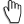
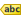
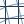
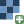
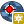
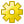
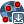
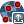
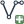
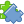

1 Пространственная привязка растра
При создании геоинформационной системы “с нуля” часто пользуются уже существующими картографическими изображениями местности (планы, карты), переведенными в цифровой вид путем сканирования или фотографирования. Такие изображения не имеют пространственной привязки к местности т.е. невозможно сказать какому участку на поверхности планеты соответствует тот или иной пиксель изображения и, как следствие, невозможно применение простейших инструментов анализа, например, расчет длин и площадей изображенных объектов. Для полноценного использования изображения в геоинформационной системе требуется выполнить операцию пространственной привязки (georeferencing) т.е. задать соответствие между каждым пикселем изображения и соответствующим ему участком на поверхности земли. Такое соответствие задается при помощи контрольных точек и параметров трансформации растра. Существует два основных случая привязки картографического изображения:
- карта имеет коордианатную сетку - контрольные точки расставляются в узлах координатной сетки;
- карта не имеет координатной сетки - контрольные точки расставляются по характерным точкам с известными координатами.
В общем случае, географическая привязка растрового изображения состоит из следующих шагов:
- добавление контрольных точек;
- выбор оптимального параметра трансформации (по критерию минимальной средней ошибки);
- удаление или корректировка положения контрольных точек с максимальной невязкой;
- запуск алгоритма географической привязки.
Привязка растров по координатной сетке рассмотрена в подразделе Глава 1.4, привязка по характерным точкам в подразделе Глава 1.5.
1.1 Организация файлов и создание проекта
Перед началом работы следует определиться с правилами организации файлов на компьютере. Для кадого нового проекта создается новая папка - папка проекта, которая содержит все файлы, относящиеся к этому проекту в том числе и файл проекта - файл с разрешением .qgz который позволяет сохранить проект со всеми текущими настройками оформления. Таким образом, сохранив текущий проект в файл проекта и открыв его позже, вы сможете продолжить работу с того места, на котором остановились.
Файл проекта содержит данные оформления (цвет, стиль линий и т.д.), но не содержит данные слоев, только пути к файлам. Если файлы входящие в проект будут переименованы или перемещены, программа не сможет их найти и при открытии проекта появится окно с предупреждением (Рисунок 1.1).

Создайте папку проекта под названием “Проект 1 Пространственная привязка” и скопируйте в нее файлы, полученные по ссылке выше (если файлы находятся в архиве - распакуйте его). Сохраняйте в эту папку все файлы относящиеся к этому проекту. Такая организация файлов позволит отделить один проект от другого а так же легко пенесести весь проект на другой компьютер без риска потери файлов (для этого достаточно скопировать папку проекта).
Создайте папку проекта под названием “Проект 1 Пространственная привязка” и скопируйте в нее файлы, полученные по ссылке выше (см. Note 1.1).
Так же следует сохранить файл проекта в созданную папку проекта. Для этого запустите программу QGIS и перейдите в пункт меню (левый верхний угол окна) “Проект” > “Сохранить проект”  . Выберите для сохранения папку проекта и задайте имя файла: “Проект 1 Пространственная привязка”. Как следствие, в папке проекта появится новый файл “Проект 1 Пространственная привязка.qgz” при открытии которого запустится программа QGIS с сохраненным состоянием проекта. Регулярно сохраняйте изменения в проекте при работе с программой!
. Выберите для сохранения папку проекта и задайте имя файла: “Проект 1 Пространственная привязка”. Как следствие, в папке проекта появится новый файл “Проект 1 Пространственная привязка.qgz” при открытии которого запустится программа QGIS с сохраненным состоянием проекта. Регулярно сохраняйте изменения в проекте при работе с программой!
Проект так же возможно сохранить используя иконку “Сохранить проект”  в основном окне программы или нажав сочетание клавиш
в основном окне программы или нажав сочетание клавиш Ctrl + S.
По примеру выше, запустите программу QGIS и сохраните файл проекта в папку проекта.
1.2 Добавление векторного слоя
Основное окно программы QGIS условно можно разделить на 4 области: сверху расположены пункты меню и панели инструментов (1), слева - панель слоев (2), основное простанство занято областью карты (3). В правом нижнем углу отображается система координат проекта, текущий масштаб и координаты курсора (4). Нумерация элементов окна отображена на рисунке ниже (Рисунок 1.2).

Для загрузки векторного слоя перейдите в пункт меню “Слой” > “Добавить слой” > “Добавить векторный слой…” (или используйте сочетание клавиш Ctrl + Shift + V). В появившемся окне нажмите на … в пункте “Векторный набор данных”. Укажите расположение файла “Квартальная сеть.shp” в папке проекта, после чего нажмите “Открыть”. В результате будет загружен векторный слой границ кварталов Караульного участкового лесничества (Видео 1.1).
Папка содержит несколько файлов с одинаковым названием но разными расширениями: “Квартальная сеть.dbf”, “Квартальная сеть.prj”, “Квартальная сеть.shx” и др. Такой тип файлов называется шейп-файлом (Shapefile). Хотя физически на диске это несколько файлов, при загрузке в ГИС они будут представлены как единый векторный слой. Выбирать для загрузки необходимо только один файл с расширением “.shp”! Подробнее с особенностями шейп-файлов возможно ознакомиться по ссылке.
Для удобства навигации добавьте номера кварталов на карту (функция добавления подписей объектов будет рассмотрена более подробно в последующих разделах: Глава 4.2). Для добавления подписей нажмите правой кнопкой мыши на слой “Квартальная сеть” в панеле слоев. Выберите пункт “Свойства…” > “Надписи”. В верхней части окна поменяйте выпадающую вкладку с “Без подписей” на “Обычные подписи”. В пункте “Значение” выберите поле “kvartal” (в этом поле содержатся номера кварталов). После этого нужно сохранить изменения (“Применить” > “ОК”) (Видео 1.2).
Для более реалистичного отображения объектов так же поменяйте систему координат проекта. Для этого нажмите на иконку  в правом нижнем углу. В появившемся окне, в строке “Поиск” введите номер системы координат 32646, выберите систему координат “WGS 84 / UTM zone 46N” и нажмите ОК. Изображение в основном окне программы изменится, согласно заданной системе координат. Номер системы координат проекта так же отображается в правом нижнем угул окна после иконки
в правом нижнем углу. В появившемся окне, в строке “Поиск” введите номер системы координат 32646, выберите систему координат “WGS 84 / UTM zone 46N” и нажмите ОК. Изображение в основном окне программы изменится, согласно заданной системе координат. Номер системы координат проекта так же отображается в правом нижнем угул окна после иконки  (Видео 1.3).
(Видео 1.3).
По примеру выше, загрузите в проект векторный слой “Квартальная сеть”, добавьте номера лесных кварталов и задайте систему координат проекта “WGS 84 / UTM zone 46N”.
1.3 Навигация по карте
В текущем проекте загружен единственный векторный слой “Квартальная сеть” который отображает границы кварталов на территории Мининского лесничества, Караульного участкового лесничества. Основным средством навигации является инструмент “Прокрутка карты” , который позволяет передвигать карту (так же этот инстумент активируется нажатием колесика мыши). Прокрутка колесика мыши позволяет менять масштаб. Для более плавного изменения масштаба используйте прокрутку вместе с нажатой клавишей Ctrl. Текущее значение масштаба возможно увидеть и задать в окне “Масштаб” в нижней части окна.
Измените положение карты при помощи инструмента “Прокрутка карты” . Задайте масштаб 1:50 000.
Слева находится панель слоев, в которой отображаются все задействованные в проекте слои, для каждого из которых указаны: название слоя, цвет отображения объектов (а так же тип геометрии объектов) и чек-бокс отключающий видимость слоя. Важнейшим инструментом является контекстное меню слоя, позволяющее задать индивидуальные настройки для каждого слоя. Меню вызывается правой кнопкой мыши на выбранном слое и содержит следующие инструменты (Рисунок 1.3):

- “Увеличить до слоя” - инструмент позволяет переместить слой в центр окна программы. Чаще всего применяется для быстрой навигации или если вы “потерялись” на карте и видите только белый экран.
- “Показывать количество объектов” - когда активирован, добавляет счетчик количества объектов напротив слоя в панеле слоев.
- “Показать подписи”  - позволяет быстро включить или отключить подписи объектов слоя.
- “Переименовать слой” - позволяет изменить название слоя в панеле слоев.
- “Дублировать слой” - создает дубликат слоя. При этом изменения в слое-оригинале будут отображаться в слое-копии и наоборот т.к. файл-источник для слоев остается общим. Однако для копии и оригинала возможно настроить различные стили отображения.
- “Удалить слой” - удаляет слой из панели слоев, при этом файл-источник удален не будет.
- “Переместить в конец”, “Переместить в начало” - перемещает слой в конец или начало списка в панеле слоев. Порядок в списке влияет на порядок отображения слоев в главном окне программы (пункт появляется только если в проекте больше одного слоя).
- “Открыть таблицу атрибутов”
 - открывает таблицу атрибутов слоя.
- открывает таблицу атрибутов слоя. - “Режим редактирования”
 - переводит слой в режим редактирования.
- переводит слой в режим редактирования. - “Фильтр” настраивает фильтрацию объектов по значениям таблицы атрибутов.
- “Видимость в приделах масштаба…” - позволяет настроить отображение слоя при определенном диапазоне масштаба.
- “Экспорт” позволяет сохранить слой в файл. Возможны разные форматы сохранения: .shp, .gpkg, .gpx, .xlsx и др.
- “Стили” дает доступ к быстрому изменению стиля отображения объектов а так же к возможности копировать настройки стиля одного слоя и применить их к другому слою.
- “Свойства…” наиболее часто используемый пункт. Позволяет настроить слой, включая стиль отображения, надписи, систему координат и др.
Примеры использования некоторых инструментов контекстного меню слоя представлены в Видео 1.4.
Изучите контекстное меню панели слоев на примере загруженного ранее слоя “Квартальная сеть”.
1.4 Привязка по координатной сетке
Координатную сетку плана или карты часто используют для географической привязки изображения. QGIS позволяет осуществить привязку как в географической, так и в спроецированной системе координат. Привязка изображения осуществляется путем расстановки контрольных точек и указания их координат, таким образом создается соответстие между координатами отдельных пикселей изображения и географическими координатами. При помощи трансформации изображения это соответствие экстраполируется на весь растровый слой. В результате каждый пиксель изображения будет иметь привязку к географическим координатам.
Для примера осуществим географическую привязку изображения “Национальный парк Столбы.png”. Карта имеет координатную сетку в географической системе координат WGS84 (EPSG:4326). Для привязки растра используется инструмент, находящийся в меню “Слой” > “Привязка растров…” . В открывшемся окне выберите иконку “Открыть растр…”  после чего в папке проекта укажите файл “Национальный парк Столбы.tiff” (Рисунок 1.4).

По примеру выше откройте окно привязки растра и загрузите растровое изображения “Национальный парк Столбы.png” из папки проекта. Результат должен соответствовать рисунку выше (Рисунок 1.4).
Окно инструмента “Привязка растров” разделено на 2 части: в верхней отображается растровое изображение, в нижней - характеристики контрольных точек. Для добавления контрольных точек используется инструмент “Добавить точку” , для удаления - “Удалить точку” , для перемещения - “Переместить точку” . Перемещение по карте осуществляется при помощи инструмента “Перемещение” или путем удержания клавиши пробел (последний способ часто удобнее). Масштаб изменяется прокруткой колесика мыши, так же как в основном окне программы.
Для добавления контрольных точек активируйте инструмент “Добавить точку” и нажмите на пересечение линий координатной сетки. В открывшемся окне введите координаты добавленной точки, укажите систему координат WGS84 (EPSG:4326) после чего нажмите ОК.
Формат ввода координат указан в верхней части окна (Рисунок 1.5). Для географических систем координат предусмострен формат ввода ГМС - градусы минуты секунды (числа разделяются пробелом, доли секунд - точкой) или ДГ - десятичные градусы (целая часть отделяется от дробной точкой). Координаты в формате ГМС: 92 12 13.25 (92 градуса 12 минут 13,25 секунд). Координаты в формате ДГ: 92.521135 (92,521135 градуса). Координаты в спроецированной системе указываются в метрах, целая часть отделяется от дробной точкой, например, 268699.48.

После добавления первой контрольной точки появится отметка на привязываемом изображении с номером точки (ID). В нижней части окна появится строка с характеристиками точки, которые состоят из номера точки (столбец ID) и соответствия между координатами привязываемого изображения (X / Y источника) и введенными географическими координатами (X / Y назначения) (Рисунок 1.6). Аналогичным образом добавляют последующие контрольные точки.

Количество конрольных точек зависит от качества изображения и выбранного типа трансформации (см. Caution 1.1). Минимальное количество точек 2, однако, для получения невязки, следует добавить по меньшей мере 3 точки. Чем хуже качество привязываемого изображения, тем больше контрльных точек понадобится для точной привязки. Точки следует добавлять равномерно по всей площади изображения.
По примеру выше добавьте 5 контрольных точек (4 по углам изображения и 1 в центре) (см. Видео 1.5).
После добавления контрольных точек, напротив каждой из них появится значение невязки а так же значение средней ошибки в правом нижнем углу окна (Рисунок 1.7 (a)). Перейдите в “Параметры трансформации”  и убедитесь что в пункте “Target CRS” (целевая система координат) указана система координат добавленных контрольных точек (WGS84 - EPSG:4326), иначе невязка будет рассчитана не корректно (по умолчанию в этом пункте указана СК проекта) (Рисунок 1.7 (b)).


Невязка (ошибка) - показатель несоответствия между координатами контрольных точек и локальными координатами изображения, а так же мера точности привязки изображения. Для уменьшения невязки сначала подбирается подходящий тип трансформации (показывающий наименьшую среднюю ошибку) после чего отдельные точки с максимальной невязкой удаляют (отключают) или корректируют их местоположения. Для подбора оптимального типа трансформации, в окне “Параметры трансформации” (Рисунок 1.7 (b)) поочередно выбирают разный “Тип трансформации”:

Для каждого нового типа трансформации невязки точек и средняя ошибка будут пересчитаны. В итоге выбирают тип трансформации с наименьшей средней ошибкой. Для изображений хорошего качества чаще всего применяют тип трансформации “Линейная” или “Гельмерта”. “Проективный” тип хорошо подходит для сфотографированных под углом карт. Остальные типы трансформации используют для изображений имеющих существенные искажения (см. Caution 1.1).
Выберите оптимальный тип трансформации (с минимальной средней ошибкой).
Примечание: некоторые типы трансформации требуют больше 5 контрольных точек, их использование будет невозможно (невязка точек не может быть рассчитана и отобразит значение “н/д”).
После выбора подходящего типа трансформации анализируют невязки отдельных точек. Числовое значение невязки отображается в столбце “Невязка”. Графически невязка отображается в виде красных линий, соединяющих контрольную точку и расчетное место этой точки. Точки с невязкой значительно большей чем средняя удаляют, для этого достаточно снять чек-бокс в первом столбце таблицы “Контрольные точки”, после чего невязка для остальных точек (и средняя ошибка) будут пересчитаны. В случае с координатной сеткой возможно уменьшить невязку путем более точного позиционирования контрольных точек, разместив их точнее на перекрестиях координатной сетки (Видео 1.6).
Выберите инструмент “Переместить точку” и скорректируйте положение отдельных контрольных точек так, что бы невязка каждой не превышала 1 пиксель. Для этого переместите контрольные точки по пути красной линии невязки (Видео 1.6).
Получив приемлемые значения невязки, проводят настройки в окне “Параметры трансформации” (Рисунок 1.7 (b)). В пункте “Output file” указывают путь и название выходного файла (его сохраняют в папку проекта). Привязку растра активируют, нажав на иконку “Начать привязку растра” . В результате в папке проекта появится модифицированный растровый файл, который так же будет добавлен в панель слоев. После успрешного завершения операции окно “Привязка растров” можно закрыть.
Завершите привязку растрового изображения. В панеле слоев должен появиться новый растровый слой “Национальный парк Столбы_modified” (Рисунок 1.8).

- При трансформации “Линейная” и “Гельмерта” возможно вместо нового растрового изображения создать файл с расширением .wld, который будет содержать параметры привязки изображения. Для этого достаточно активировать чек-бокс в пункте “Только создать world-файл…”.
- Во время привязки контрольные точки сохраняются в файл с расширением .points (чек-бокс “Сохранить контрольные точки”). Их так же возможно сохранить или загрузить нажатием на иконки “Сохранить контрольные точки как…”  и “Загрузить контрольные точки…”  соответственно.
- Кроме привязки растровых изображений, доступна привязка векторных слоев, для загрузки которых используется иконка “Открыть вектор” .
1.4.1 Инструменты измерения
Изображение с картографической привязкой становится возможно использовать в геоинформационной системе, например, для измерения длин и площадей изображенных объектов. Эти операции проводятся при помощи инструментов изменений, находящихся в “Панеле атрибутов” 

Инструменты “Измерить расстояние” (Сtrl + Shift + M) а так же “Измерить площадь” (Сtrl + Shift + J) позволяют выбрать единицы измерения и параметры расчета: на плоскости или на эллипсоиде. В последнем случае результаты измерений получаются несколько больше из-за учета кривизны земли (Рисунок 1.10).


На геопривязанном изображении “Национальный парк Столбы” проведите следующие измерения:
- Измерьте расстояние между “Первым” столбом и столбом “Перья”, оно должно составить около 606 м;
- Измерьте площадь “Первого” столба, она должна составить около 1,33 га.
1.5 Привязка по характерным точкам
Планы лесонасаждений не имеют координатной сетки. В таком случае для привязки используют характерные точки, координаты которых известны, например квартальные столбы. Координаты точек вводят вручную, по аналогии с привязкой по координатной сетке (см предыдущий подраздел - Глава 1.4), или получают из уже привязанного изображения (или векторного слоя). Второй способ получения координат рассмотрен в этом подразделе.
Для примера используется изображение “План лесонасаждений 3.jpg”, находящееся в папке проекта. Привязка будет осуществлять при помощи уже загруженного векторного слоя “Квартальная сеть”, содержащего границы лесных кварталов. Перейдите в меню “Слой” > “Привязка растров…” и загрузите изображение “План лесонасаждений 3.jpg”. Привязка осуществляется по углам кварталов (квартальным столбам). Используйте инструмент “Добавить точку” для добавления контрольной точки в угол одного из кварталов. В открывшемся окне выберите пункт “С карты” (окно привязки будет свернуто) после чего в основном окне программы выберите аналогичную точку на векторном слое “Квартальная сеть”. Окно будет автоматически заполнено координатами точки, согласно СК проекта (Рисунок 1.11, Видео 1.7). Таким образом задаются координаты для контрольных точек.

После добавления контрольных точек, дальнейшие действия полностью повторяют шаги из предыдущего раздела (Глава 1.4).
Выполните географическую привязку изображения “План лесонасаждений 1.jpg” или “План лесонасаждений 2.jpg” которые находятся в папке проекта:
- по примеру выше расставьте контрольные точки во всех квартальных столбах (Видео 1.7);
- подберите оптимальный тип трансформации (см. Задание 1.8);
- удалите или скорректируйте положение точек с невязкой более 10 пикселей (см. Задание 1.9).
Результат выполнения задания: в панеле слоев должно появиться геопривязанное изображение плана лесонасаждений (Рисунок 1.12).

1.5.1 Визуальная оценка точности привязки
Визульно точность привязки оценивается путем сопоставления привязанного изображения с векторным слоем или другим изображением (напирмер космоснимком). Для визульного сравнения плана лесонасаждений и слоя “Квартальная сеть” необходимо сделать заливку кварталов прозрачной, линии границ более толстыми и яркими а так же поменять порядок слоев в панеле слоев (первый слой - “Квартальная сеть”, второй слой - “План лесонасаждений”).
В контекстном меню слоя “Квартальная сеть” перейдите в пункт “Свойства” > “Стиль” (Рисунок 1.13).
{kind=link}
В окне выберите пункт “Простая заливка” и настройте параметры: “Стиль заливки” - “Без заливки”; “Цвет обводки” - выберите яркий цвет; “Толщина обводки” - 0,46. Нажмите “OK” для применения настроек. Настройки сделают полгоны кварталов прозрачными с более толстыми и яркими линиями. В панеле слоев поменяйте местами слои так, что бы слой “Квартальная сеть” был первым в списке. Теперь возможна визуальная оценка различий границ кварталов изображения и векторного слоя (Видео 1.8).
Порядок слоев в панеле слоев влияет на порядок отображения в окне программы. Верхние слои могут перекрывать нижние из-за чего они будут не видны.
По примеру выше проведите визуальную оценку точности привязки изображения “План лесонасаждений”.
1.5.2 Модуль QuickMapServices (QMS)
Программа QGIS позволяет расширить набор встроенных функций за счет устанавливаемых модулей. Одним из таких модулей является “QuickMapServices” который дает возможность загрузить источники картографической информации (Google maps, Яндекс карты, OpenStreetMap и др.) напрямую в проект в виде отдельного слоя (подложки). Для установки этого модуля перейдите в панель “Модули” > “Управление модулями…” . В открывшемся окне, во вкладке “Все” в строке поиска введите название модуля “QuickMapServices”, выберите модуль и установите его (“Установить модуль”). После установки новый пункт появится в панеле “Интернет” > “QuickMapServices” . При выборе одной из карт, она появится в панеле слоев в виде растрового слоя, а в окно программы будет загружено изображение соответствующей карты (Видео 1.9).
Некоторые карты могуть работать не корректно.
Обновить перечень доступных карт можно перейдя в настройки модуля (“Интернет” > “QuickMapServices” > “Настройки”), во вкладке “Загрузить сервисы” выберите пункт “Получить дополнительные источники данных”. “QuickMapServices” лишь один из доступных модулей, расширяющих функции QGIS. Аналогичным способом возможно установить и другие модули.
- Добавьте карту “Google Satellite” из модуля QuickMapServices в панель слоев.
- Визуально оцените точность привязки “Плана лесонасаждений” в сравнении с космическим снимком.